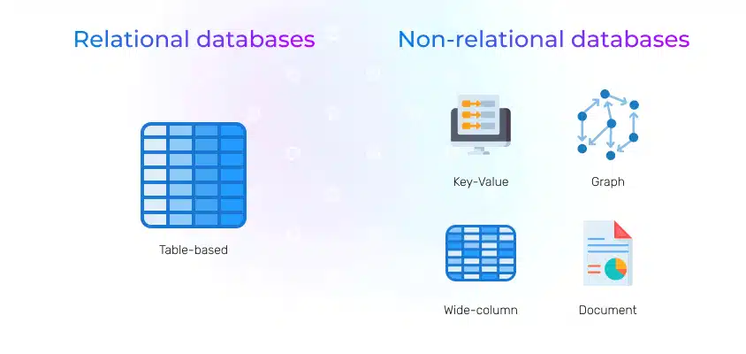
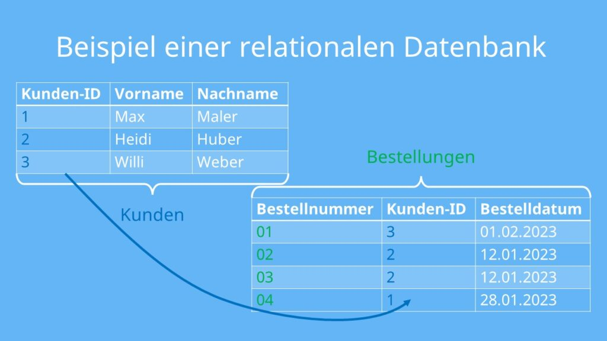
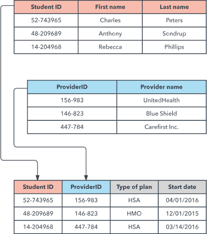
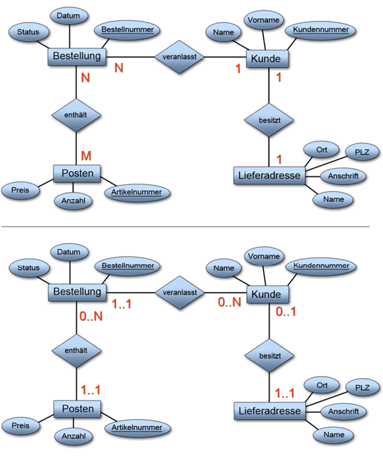

🗄️ Datenbanken
Datenbanktypen, relationale Beziehungen, Datenmodelle (ER-Diagramme), Verbindungen zu Datenbanken - und eine offen einsehbare Testdatenbank zum selber Abfragen mit eigenen SQL-Queries.
📺 Vertiefung: Datenbanken Grundlagen einfach erklärt (IT & Medien einfach erklärt)
Warum überhaupt Datenbanken?
i
Eine einzelne Excel- oder Textdatei funktioniert für ein paar
Zeilen. Sobald aber mehrere Programme oder Personen GLEICHZEITIG
lesen/schreiben, riesige Datenmengen strukturiert durchsucht
werden müssen, oder Daten konsistent zueinander bleiben sollen
(z.B. eine Bestellung darf nicht auf einen nicht-existierenden
Kunden zeigen) - genau dafür gibt es Datenbank-Systeme.
i
Eine Datenbank speichert strukturierte Daten so, dass mehrere Anwendungen/Nutzer gleichzeitig zuverlässig darauf zugreifen können, Datenmengen effizient durchsucht werden können, und Regeln (z.B. "jede Bestellung braucht einen gültigen Kunden") automatisch durchgesetzt werden.
Datenbanktypen

| Typ | Modell | Beispiele | Typischer Einsatz |
|---|---|---|---|
| Relational | Tabellen mit festem Schema | MySQL, PostgreSQL, SQL Server, Oracle | Geschäftsdaten mit klaren Beziehungen (Kunden, Bestellungen, Buchhaltung) |
| Key-Value | Schlüssel → Wert, keine Struktur vorgeschrieben | Redis, DynamoDB | Sessions, Caching - extrem schneller Zugriff über den Schlüssel |
| Document | JSON-ähnliche Dokumente, pro Datensatz flexibel | MongoDB, CouchDB | Uneinheitliche/sich häufig ändernde Datenstrukturen |
| Wide-Column | Tabellenähnlich, aber Spalten pro Zeile flexibel | Cassandra, HBase | Riesige Datenmengen, verteilt über viele Server |
| Graph | Knoten + Kanten (Beziehungen selbst sind Daten) | Neo4j | Stark vernetzte Daten: soziale Netzwerke, Empfehlungen, Abhängigkeiten |
Relationale Datenbanken: Tabellen & Beziehungen
i
Statt den Namen jedes Kunden bei jeder Bestellung erneut
hinzuschreiben, steht er nur EINMAL in der Kunden-Tabelle. Die
Bestellungen-Tabelle merkt sich pro Zeile nur die Kunden-ID -
einen Verweis, keine Kopie.
i

Jede Tabelle hat einen Primärschlüssel (Primary Key)
- eine Spalte, die jede Zeile eindeutig identifiziert (z.B.
kunden_id). Andere Tabellen verweisen per
Fremdschlüssel (Foreign Key) darauf - z.B. die Spalte
kunden_id in der Tabelle bestellungen.
Genau dieses Prinzip verbindet die beiden Tabellen miteinander, ohne
Daten doppelt zu speichern.
Beziehungstypen: 1:1, 1:N, M:N
| Typ | Beispiel | Umsetzung |
|---|---|---|
| 1:1 | Ein Mitarbeiter hat genau einen Firmenausweis | Fremdschlüssel in einer der beiden Tabellen (mit Eindeutigkeits-Regel) |
| 1:N | Ein Kunde hat mehrere Bestellungen, jede Bestellung hat aber nur einen Kunden | Fremdschlüssel auf der "N"-Seite (kunden_id in bestellungen) |
| M:N | Eine Bestellung enthält mehrere Artikel, ein Artikel steckt in vielen Bestellungen | Zusätzliche Verbindungstabelle (Junction Table) mit zwei Fremdschlüsseln |
M:N-Beziehungen kann eine relationale Datenbank nicht direkt abbilden - es braucht immer eine Verbindungstabelle, die daraus zwei 1:N-Beziehungen macht:

Im Testdatenbank-Beispiel unten übernimmt bestellposten
genau diese Rolle zwischen bestellungen und
artikel.
Datenmodelle: ER-Diagramm & Kardinalitäten
i
Ein Entity-Relationship-Diagramm (ER-Diagramm) wird VOR dem Bau
einer Datenbank gezeichnet - es legt fest, welche Entitäten
(z.B. Kunde, Bestellung) es gibt, welche Attribute sie haben,
und wie sie zueinander stehen (Kardinalitäten), bevor auch nur
eine einzige Tabelle erstellt wird.
i

Die obere Variante zeigt die klassische Chen-Notation (1, N, M) - die untere die genauere (min,max)-Notation: sie gibt pro Seite eine Unter- UND Obergrenze an. "0..N" bei Bestellung (auf der Kunde-Seite der Beziehung) bedeutet: ein Kunde hat null bis beliebig viele Bestellungen. "1..1" bei Kunde bedeutet: eine Bestellung gehört immer zu genau einem Kunden.
Verbindungen zu Datenbanken
Eine Anwendung spricht so gut wie nie direkt mit den Datendateien auf der Festplatte - sie verbindet sich über das Netzwerk mit dem Datenbank-Server, meist über einen fest zugewiesenen Port und einen passenden Treiber:
| Datenbank | Standardport | Beispiel-Treiber |
|---|---|---|
| MySQL / MariaDB | 3306 | mysql2 (Node.js), mysqli (PHP) |
| PostgreSQL | 5432 | psycopg2 (Python), Npgsql (.NET) |
| Microsoft SQL Server | 1433 | ODBC, System.Data.SqlClient |
| MongoDB | 27017 | MongoDB-Treiber (Node.js/Python/...) |
| Redis | 6379 | redis-py, StackExchange.Redis |
Ein Connection String bündelt alle Verbindungsdaten in einer Zeile,
z.B. Server=db01;Database=Shop;User Id=app;Password=***;
- das Passwort sollte dabei nie im Klartext im Quellcode stehen,
sondern z.B. über einen Secret-Manager oder Umgebungsvariablen
bereitgestellt werden.
SQL-Grundlagen (Spickzettel)
Diese Sandbox unten versteht eine bewusst vereinfachte SQL-Untermenge:
SELECT spalte1, spalte2 -- oder * für alle Spalten FROM tabelle JOIN andere_tabelle ON tabelle.spalte = andere_tabelle.spalte WHERE bedingung [AND|OR bedingung ...] ORDER BY spalte [ASC|DESC]
Vergleichsoperatoren in WHERE: =,
!=, >,
<, >=,
<=, sowie
LIKE '%text%' für Teiltreffer.
Nicht unterstützt: Klammern in WHERE, Aggregatfunktionen wie
COUNT/SUM, sowie INSERT/UPDATE/DELETE - die Sandbox ist bewusst
reines Lesen (SELECT).
Testdatenbank (offen einsehbar)
i
Anders als bei einer echten Anwendung siehst du hier ALLE Daten
direkt - genau deshalb eignet sich diese Datenbank zum Üben: du
kannst dein Abfrage-Ergebnis jederzeit gegen die sichtbaren
Rohdaten gegenprüfen.
i
SQL-Sandbox
Probier's aus, z.B.:
🧩 Abfrage-Aufgaben
Schreib für jede Aufgabe eine eigene SQL-Abfrage gegen die Testdatenbank oben und klicke "Prüfen".